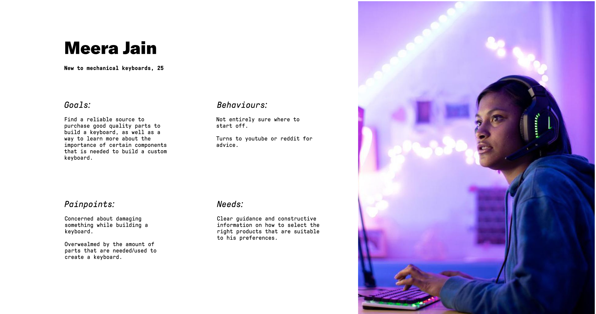
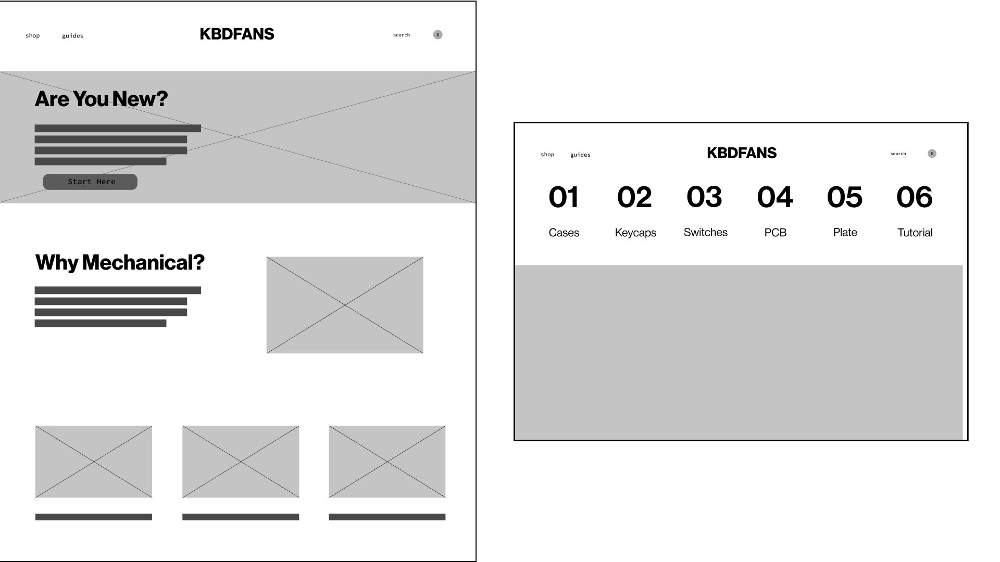
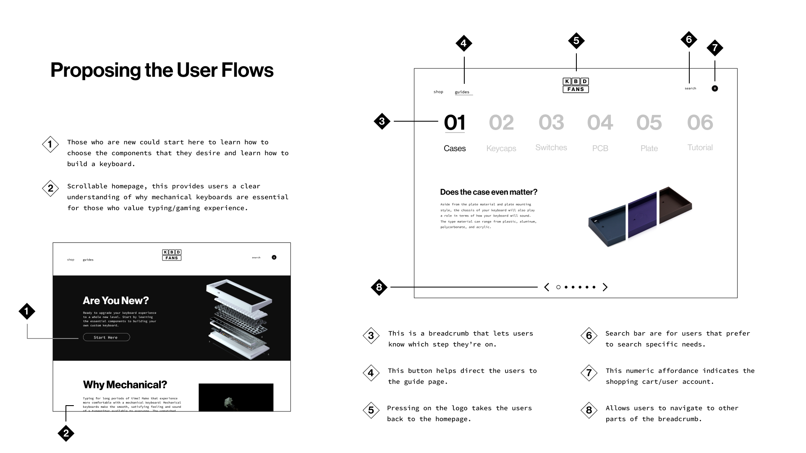
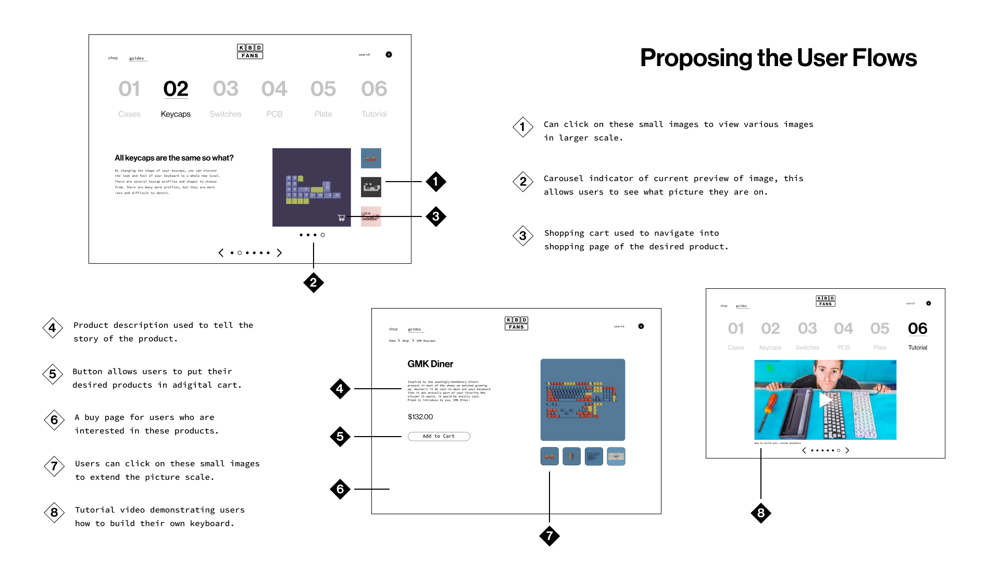

In my Information Design course (IAT 235), my team and I embarked on a mission to reshape the user experience of KBDfans, a platform dedicated to the world of custom keyboard building. Our redesign aimed to guide new users through an intuitive breadcrumb-like process that enhances their knowledge with the products. Additionally, we undertook the task of revamping KBDfans' homepage with a minimalistic approach.
Create an intervention that instills confidence in new users as they navigate KBDfans' products. This redesign also aimed to elevate the overall user experience across the entire website, catering to users of all levels. A pivotal goal was to facilitate KBDfans' ability to guide customers through the process of building their first custom keyboard, ensuring a seamless and empowering journey for every user.
User Research
UI/UX
Team Management
1 Week
Team Project - Jack Luo, Alex Luowan, Ratul Dawonauth, Yanming Guo
During the research phase, our team conducted thorough investigations to understand users' needs in the perspective of a new user looking to build their new custom keyboard. We gathered insights from interviews, surveys, and market analysis, and develop a user personna.
Building upon the research, we analyzed the collected data to identify pain points, user preferences, and potential opportunities. This phase provided a foundation for informed decision-making.
In the ideation phase, we brainstormed creative concepts to address the identified challenges. Our team explored various approaches to custom keyboard preferences. Thus, my team and I developed quick wireframes.
With a clear direction, we transitioned to the design phase. Here, we translated our ideas into tangible UI designs, ensuring seamless interactions and an intuitive user interface.
 We presented our design to users and stakeholders to gather feedback. This feedback loop provided valuable insights that helped us refine our designs and address any potential issues.
Based on the feedback received, we iterated on our designs to enhance usability and user satisfaction. Once satisfied, we prepared the project for handoff, ensuring a smooth transition to development.
Screen Recording of Redesigned Homepage & Guide Implementation
The redesign of KBDfans marked a significant step in my UI/UX journey, providing hands-on experience in design, research, testing, and iteration. It illuminated the power of teamwork, fostering a culture of collaboration and constructive critique that enriched our design process.
This project deepened my grasp of UI/UX principles and highlighted the essential role of collective efforts in achieving innovative, user-centered designs, as well as paying attention to user insights. The lessons learned from the KBDfans redesign will undoubtedly influence my future projects, guiding me toward impactful and collaborative design endeavors.
Designing is never finished, so my next steps would be to: